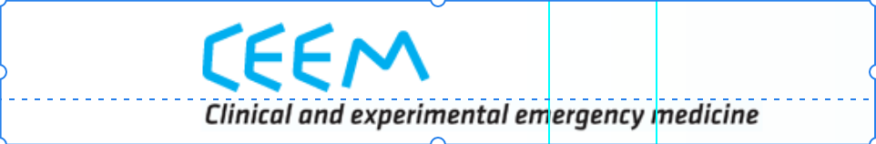
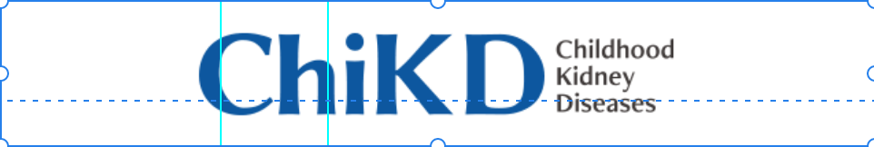

About
Service
Journal
Contact
Publish with us
2009년 부터 100여 종(2023년 79종)의 학술지 편집을 진행하면서 쌓인 노하우를 적용하고 있습니다.
전담 직원의 전문적인 총괄 하에 저널 종합 관리, 편집, 출판, 그리고 그 이후 과정까지 체계적인 관리를 제공합니다.
Editorial Management
 
Manuscript Editing
A
Acute and Critical Care
ALGAE
Animals Systematics Evolution and Diversity
Annals of Child Neurology
Annals of Coloproctology
Annals of Geriatric Medicine and Research
Annals of Surgical Treatment and Research
Archives of Aesthetic Plastic Surgery
Archives of Craniofacial Surgery
Archives of Hand and Microsurgery
Asian Spine Journal
C
Cancer Research and Treatment
Cardiovascular Prevention and Pharmacotherapy
Childhood Kidney Diseases
Clinical and Experimental Emergency Medicine
Clinical and Experimental Otorhinolaryngology
Clinical and Experimental Reproductive Medicine
Clinical and Experimental Vaccine Research
Clinical Endoscopy
Clinical Hypertension
Clinics in Orthopedic Surgery
Clinics in Shoulder and Elbow
D
Diabetes and Metabolism Journal
E
Encephalitis
Endocrinology and Metabolism
G
Genomics & Informatics
Gut & Liver
H
Health Policy and Management
Healthcare Informatics Research
HIRA Research
Human-Centric Computing and Information Sciences
I
International Journal of Fuzzy Logic & Intelligent Systems
Intestinal Research
J
Journal of Geriatric Neurology
Journal EMS Medicine
Journal of Computing Science & Engineering
Journal of Chest Surgery
Journal of Educational Evaluation for Health Professions
Journal of Electrodiagnosis and Neuromuscular Diseases
Journal of Electromagnetic Engineering & Science
Journal of Information Processing Systems
Journal of Korean Society Emgergency Medicine
Journal of Minimally Invasive Surgery
Journal of Neurocritical Care
Journal of Obesity & Metabolic Syndrome
Journal of Pathology and Translational Medicine
Journal of Radiation Protection and Research
Journal of the Korean Medical Association
Journal of the Korean Society of Geriatric Neurosurgery
Journal of Trauma & Injury
Journal of Wound Management and Research
Journal of Yeungnam Medicical Science
K
Korean Journal of Clinical Oncology
Korean Journal of Family Medicine
Korean Journal of Legal Medicine
Korean Journal of Medical Education
Korean Journal of Ophthalmology
Korean Journal of Plant Taxonomy
Korean Journal of Sports Medicine
Korean Journal of Transplantation
Korean Journal of Veterinary Research
Korean Medical Education Review
Kosin Medical Journal
L
Laboratory Medicine and Quality Assurance
N
Neonatal Medicine
O
Organoid
Osong Public Health Research Perspective
P
Pediatric Emergency Medicine Journal
Perinatology
Plant Pathology Journal
Precision and Future Medicine
R
Radiation Oncology Journal
Research in Plant Disease
Research in Vestibular Science
S
Science Editing
Soonchunhyang Medical Science
T
Tuberculosis and Respiratory Diseases
U
Ultrasonography